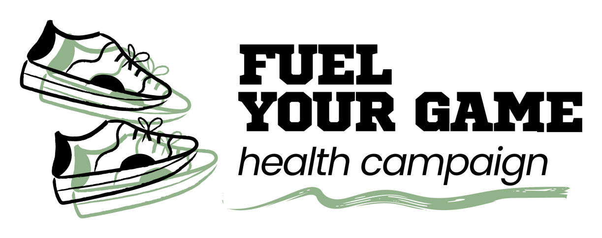
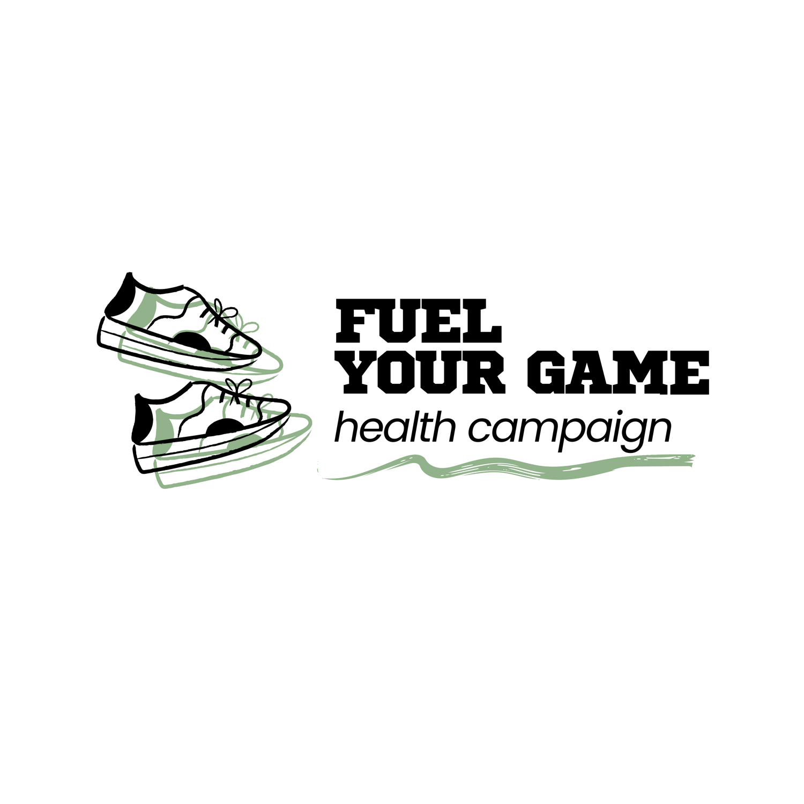

Campaign title
FUEL YOUR GAME: Eat Like a Pro
Team name: Skills for Death
A physical health campaign by Skills for Death
A campaign that shows young football players how the food they eat every day can help them grow, train better and get closer to their dream of playing professionally.
“Train hard, eat smart, play strong.”

The campaign
A campaign that shows young football players how the food they eat every day can help them grow, train better and get closer to their dream of playing professionally.
FUEL YOUR GAME: Eat Like a Pro
Team name: Skills for Death
Physical Health
With a focus on nutrition and healthy eating habits for young football players and future athletes.
10 to 20 years old
Our campaign is intended for children, teenagers and young adults who play football at school, in a club or in a league, and for anyone in this age range who is thinking about pursuing an athletic career.
“Train hard, eat smart, play strong.”
To help young football players aged 10 to 20 understand and adopt healthy eating habits, such as eating balanced meals, staying hydrated and eating at the right times before and after training, so that they can improve their physical health, growth and performance on the field. We will share practical, easy-to-follow information through our campaign website and materials during the semester.
Our health type
Physical health is the condition of our body and how well it works in our daily lives. It depends on healthy habits such as being physically active, sleeping well and, most importantly for our campaign, eating a healthy diet. According to the World Health Organization (WHO, 2026a), “diet plays a critical role in shaping the health and well-being of both individuals and populations, and unhealthy diets are a major risk factor for disease and disability” (Key facts section). The WHO also explains that “healthy diets help to protect against malnutrition in all its forms, as well as noncommunicable diseases (NCDs), including diabetes, heart disease, stroke and cancer” (WHO, 2026a, Key facts section).
Food is even more important for young people who play sports, because their bodies are still growing. Purcell and the Canadian Paediatric Society (2013) state that “nutrition is an important part of sport performance for young athletes, in addition to allowing for optimal growth and development” (p. 200). They add that “to optimize performance, young athletes need to learn what, when and how to eat and drink before, during and after activity” (Purcell & Canadian Paediatric Society, 2013, p. 200). This means that a young football player needs enough carbohydrates for energy, protein to build and repair muscles, and water to stay hydrated.
Professional football also shows how important food is for physical health. A group of experts from the Union of European Football Associations (UEFA) explains that “nutrition plays a valuable integrated role in optimising performance of elite players during training and match-play, and maintaining their overall health throughout the season” (Collins et al., 2021, p. 416). These experts recommend “a ‘food first’ philosophy (ie, food over supplements)” (Collins et al., 2021, p. 416). In other words, the best way for young players to take care of their physical health is not with pills or shakes, but with real, balanced meals every day. Finally, the WHO (2026a) reminds us that “dietary behaviours and preferences established in childhood and adolescence often extend into adulthood” (Key facts section), so learning to eat well between the ages of 10 and 20 can help players stay healthy for the rest of their lives.
Five tips
Rice, pasta, oats, potatoes, tortillas and fruit are the fuel you burn while you play.
Eggs, chicken, fish, beans, milk and yogurt help your muscles grow and recover.
Drink before, during and after training, not only when you feel thirsty.
Eat a balanced meal a few hours before playing and a carb-and-protein snack afterwards.
Choose real food over supplements and add fruits and vegetables to every meal.

Our identity
Our logo shows two sports shoes in motion, which represent physical activity and the energy that young players need on the field. Next to them, the name FUEL YOUR GAME appears in a bold, athletic font, like the letters on a football jersey, and a green brush stroke underlines the words “health campaign.” We chose green because it represents health, fresh food and the football pitch, so the logo connects good nutrition with sport, which is the main idea of our campaign.
Infographic
Our infographic, “Game Day Fuel Plan,” shows young football players what to eat and drink before, during and after a match. It is based on the recommendations of the Canadian Paediatric Society, which advises young athletes to eat a meal at least three hours before an event, to drink water before and during exercise, and to have a recovery snack with protein and carbohydrates within 30 minutes after playing (Purcell & Canadian Paediatric Society, 2013). It also includes facts from the World Health Organization, which reports that 86% of adolescents worldwide do not get enough physical activity (WHO, 2026c) and that adolescent obesity has quadrupled since 1990 (WHO, 2026b). With this information, we want players to understand that the timing of their meals and drinks matters as much as the food itself.
3+ hoursbefore
Carbohydrates (rice, pasta, tortillas) plus some protein. Keep fat and fiber low, and do not try new foods on game day.
2–3 hoursbefore
Start the match already hydrated, not thirsty.
1–2 hoursbefore
A small snack or a liquid meal tops up your energy without feeling heavy.
Duringthe match
Water is enough for under an hour. For more than 60 minutes or hot weather, a sports drink can help.
30 minafter
Try yogurt with fruit within 30 minutes, then eat again 1–2 hours later.
Rehydrateafter
Replace the water you lost in sweat, with some salty snacks to help.
86%
of adolescents worldwide do not get enough physical activity. (WHO, 2026c)
4×
Adolescent obesity has quadrupled around the world since 1990. (WHO, 2026b)
15 mg
of iron a day for girls aged 14–18 (11 mg for boys). (Purcell & Canadian Paediatric Society, 2013)

Know the risks
This section presents three diseases and three disorders that can affect young football players. The diseases are hypertrophic cardiomyopathy, chronic traumatic encephalopathy and infectious mononucleosis. The disorders are rhabdomyolysis, patellofemoral pain syndrome and anorexia nervosa. For each one, we describe its causes, symptoms, diagnosis, mortality and prevention, using information from reliable medical sources.
| Condition | Type | Warning sign |
|---|---|---|
| Hypertrophic cardiomyopathy (HCM) | Disease | Fainting during or just after exercise |
| Chronic traumatic encephalopathy (CTE) | Disease | Memory problems and mood changes years after repeated head impacts |
| Infectious mononucleosis | Disease | Extreme fatigue, fever and sore throat |
| Rhabdomyolysis | Disorder | Dark, cola-colored urine after intense exercise |
| Patellofemoral pain syndrome (PFPS) | Disorder | Pain in the front of the knee |
| Anorexia nervosa | Disorder | Eating very little and exercising too much |
Choose a condition to read its full profile.
Diseases
Disorders
Warning sign: Fainting during or just after exercise
Hypertrophic cardiomyopathy is “a disease in which the heart muscle becomes thickened, also called hypertrophied” (Mayo Clinic, n.d.-d, Overview section). It “usually is caused by changes in genes that cause the heart muscle to thicken” and it “usually is passed down through families” (Mayo Clinic, n.d.-d, Causes section). This means that a young player can have HCM without knowing it, because the problem is inherited and not caused by lifestyle.
Many people with HCM feel normal for years. When symptoms appear, they can include chest pain, shortness of breath, a fast or fluttering heartbeat (palpitations) and dizziness, especially during exercise (Mayo Clinic, n.d.-d). One of the most important warning signs for athletes is “fainting, mainly during or just after exercise or other physical activity” (Mayo Clinic, n.d.-d, Symptoms section).
Doctors use several heart tests to diagnose HCM. “An echocardiogram shows how well the heart’s chambers and valves are pumping blood,” and “an ECG can show irregular heartbeats and signs of heart thickening” (Mayo Clinic, n.d.-c, Diagnosis section). A cardiac MRI can create detailed images of the heart, and genetic testing can help find the condition in families (Mayo Clinic, n.d.-c).
HCM is especially dangerous for athletes because intense effort can trigger a deadly heart rhythm. Mayo Clinic (n.d.-d) warns that “sudden cardiac death can happen in young people who seem healthy, including high school athletes,” and that “sudden cardiac death might be the first sign of the condition” (Complications section).
According to Mayo Clinic (n.d.-d), “there is no known way to prevent hypertrophic cardiomyopathy (HCM)” (Prevention section). However, early detection saves lives: when a family member has HCM, “echocardiogram screenings are recommended starting at about age 12” (Mayo Clinic, n.d.-d, Prevention section). For people at high risk, doctors may place an implantable cardioverter-defibrillator (ICD), and “use of an ICD has been shown to help prevent sudden cardiac death” (Mayo Clinic, n.d.-c, Treatment section). For this reason, young players should have a medical check-up before joining a team, especially if a relative has heart disease.
Warning sign: Memory problems and mood changes years after repeated head impacts
CTE “is a brain disease likely caused by repeated head injuries” (Mayo Clinic, n.d.-b, Overview section). These injuries are “often occurring in contact sports or military combat” (Mayo Clinic, n.d.-b, Causes section). In football, researchers are studying the effects of repeated head impacts, including concussions and heading the ball many times over a career (Mackay et al., 2019).
According to Mayo Clinic (n.d.-b), “symptoms of CTE are thought to include trouble with thinking and emotions, physical symptoms, and other behaviors” (Symptoms section). These can include memory loss, confusion, poor impulse control, depression and aggression. Over time, people may develop “trouble with memory and thinking that is likely to progress to dementia” (Mayo Clinic, n.d.-b, Symptoms section).
CTE is very difficult to diagnose. “The only way to definitively diagnosis [sic] CTE is after death during an autopsy of the brain” (Mayo Clinic, n.d.-b, Diagnosis section). This means that, while a person is alive, doctors can only suspect CTE based on their symptoms and history of head injuries.
CTE does not cause death right away, but it can seriously affect a person’s health and quality of life. “Research shows that people with CTE may be at increased risk of suicide” (Mayo Clinic, n.d.-b, Complications section). A study of former professional soccer players in Scotland found that “mortality from neurodegenerative disease was higher” among former players than among people from the general population (Mackay et al., 2019, p. 1801). In that study, 1.7% of former players died from a neurodegenerative disease, compared with 0.5% of the comparison group (Mackay et al., 2019).
CTE “can be prevented by lowering the risk of getting a concussion” (Mayo Clinic, n.d.-b, Prevention section). In youth football, this means limiting heading drills for children, following a strict rest and return-to-play plan after any head injury, and using balls of the correct size and pressure.
Warning sign: Extreme fatigue, fever and sore throat
“Infectious mononucleosis is a contagious disease most commonly caused by Epstein-Barr virus (EBV)” (Centers for Disease Control and Prevention [CDC], 2024, para. 1). The virus spreads “most commonly through bodily fluids, especially saliva” (CDC, 2024, How it spreads section). For football teams, this is important because players often share water bottles during training.
Typical symptoms include extreme fatigue, fever, sore throat, headaches and body aches, swollen lymph nodes in the neck and armpits, a swollen liver or spleen, and a rash (CDC, 2024). These symptoms “usually appear 4 to 6 weeks after you get infected with EBV” (CDC, 2024, Symptoms section), and most people get better in 2 to 4 weeks (CDC, 2024).
“Healthcare providers typically diagnose infectious mononucleosis based on symptoms” (CDC, 2024, Diagnosis section). Blood tests can confirm it: Womack and Jimenez (2015) explain that “a heterophile antibody test is the best initial test for diagnosis of EBV infection” (Diagnosis section), and a blood count can also show changes in white blood cells.
Deaths from mononucleosis are extremely rare. The main danger for athletes is a rupture of the enlarged spleen, which can cause serious internal bleeding. “Splenic rupture occurs in 0.1% to 0.5% of patients with IM” (Womack & Jimenez, 2015, Complications section), and the CDC (2024) warns that “participating in contact sports can be strenuous and may cause the spleen to rupture” (Treatment section).
“There is no vaccine to protect against infectious mononucleosis” (CDC, 2024, Prevention section). The best way to prevent it is to avoid kissing or “sharing drinks, food, or personal items (like toothbrushes)” with people who have it (CDC, 2024, Prevention section). Players who get sick should rest, and experts “recommend against athletic participation for the first three weeks of illness” (Womack & Jimenez, 2015, Return to Play section).
Warning sign: Dark, cola-colored urine after intense exercise
“Rhabdomyolysis is a condition that causes your muscles to break down (disintegrate), which leads to muscle death” (Cleveland Clinic, 2023, Overview section). “When muscle is damaged, a protein called myoglobin is released into the bloodstream” (MedlinePlus, 2025, Causes section). It can be caused by extreme physical effort, severe dehydration or injuries, and “jumping into an exercise program too fast can lead to rhabdomyolysis” (Cleveland Clinic, 2023, Causes section).
The most common symptoms are severe muscle pain, weakness and tenderness. A clear warning sign is “dark, red, or cola-colored urine,” together with “decreased urine output” (MedlinePlus, 2025, Symptoms section).
“A physical exam will show tender or damaged skeletal muscles” (MedlinePlus, 2025, Exams and Tests section). Doctors confirm the diagnosis with a blood test that measures the creatine kinase (CK) level and with a urine myoglobin test (MedlinePlus, 2025).
“Rhabdomyolysis can be life-threatening if it isn’t treated quickly” (Cleveland Clinic, 2023, Outlook section). The released proteins can damage the kidneys, and “if your kidneys can’t get rid of your body’s waste fast enough, kidney failure can occur” (Cleveland Clinic, 2023, Outlook section). Fast treatment makes a big difference: “getting treated soon after rhabdomyolysis will reduce the risk of permanent kidney damage” (MedlinePlus, 2025, Outlook section).
MedlinePlus (2025) recommends “drinking plenty of fluids after strenuous exercise” (Prevention section). Players should also stay hydrated, avoid overheating, take breaks in the shade when it is hot, and increase the intensity of training little by little, especially during preseason (Cleveland Clinic, 2023).
Warning sign: Pain in the front of the knee
PFPS “usually happens when the kneecap does not move smoothly as the knee bends and straightens” (Mayo Clinic, n.d.-f, Causes section). It is common in football because “running or jumping sports put repeated stress on the knee joint, which can cause irritation under the kneecap” (Mayo Clinic, n.d.-f, Causes section). Weak muscles also play a role: it “can happen when the muscles around the hip and knee don’t keep the kneecap in line” (Mayo Clinic, n.d.-f, Causes section).
The main symptom is “pain felt in the front of the knee, around or behind the kneecap” (Mayo Clinic, n.d.-f, Overview section). The pain usually gets worse when climbing stairs, squatting or kneeling, and it can also appear as “pain after sitting for a long time with knees bent” (Mayo Clinic, n.d.-f, Symptoms section).
“Diagnosis also relies on a physical exam” (Mayo Clinic, n.d.-e, Diagnosis section), in which the doctor checks the knee and the movement of the kneecap. Sometimes imaging tests are used: X-rays show the bones, and “MRIs show detailed images of bones and soft tissues, such as the knee ligaments and cartilage” (Mayo Clinic, n.d.-e, Diagnosis section).
PFPS is not a fatal condition. It does not cause death, but it can make training and playing painful and keep a player away from the field. Fortunately, “treatment of patellofemoral pain often begins with simple measures,” such as resting the knee (Mayo Clinic, n.d.-e, Treatment section).
Strength training is the best protection, because “strong leg and hip muscles help keep the knee balanced during activity” (Mayo Clinic, n.d.-f, Prevention section). Players should also warm up before playing and “wear shoes that fit well and are designed for the activity” (Mayo Clinic, n.d.-f, Prevention section).
Warning sign: Eating very little and exercising too much
“Anorexia nervosa (often called anorexia) is an eating disorder and serious mental health condition” (National Health Service [NHS], 2024, para. 1). “We do not know exactly what causes anorexia and other eating disorders” (NHS, 2024, Causes section), but genetics, perfectionist personality traits and cultural pressure to be thin may all play a part (Mayo Clinic, n.d.-a). It is “most common in young women and typically starts in the mid-teens” (NHS, 2024, para. 2), which is the same age range as our campaign.
People with anorexia often skip meals, eat very little and may exercise too much. A key sign is “believing you’re fat when you’re a healthy weight or underweight” (NHS, 2024, Symptoms section). Physical signs can include dizziness, hair loss and an irregular heartbeat (Mayo Clinic, n.d.-a; NHS, 2024). For athletes, training much more than the coach asks while eating very little can be a warning sign.
The NHS (2024) advises: “If you think you may have anorexia, even if you’re not sure, see a GP as soon as you can” (Getting help section). The doctor will ask about eating habits and feelings, weigh the person and check their heart rate, blood pressure and temperature (NHS, 2024).
Anorexia is one of the most dangerous mental health conditions. “It’s one of the leading causes of deaths related to mental health problems” (NHS, 2024, para. 4), and “at its most severe, it can be fatal” (Mayo Clinic, n.d.-a, Complications section). A meta-analysis of 36 studies found a mortality rate of 5.1 deaths per 1,000 person-years and a standardized mortality ratio of 5.86, which means people with anorexia died almost six times more often than people of the same age in the general population; one in five of those deaths was by suicide (Arcelus et al., 2011).
“There’s no guaranteed way to prevent anorexia nervosa” (Mayo Clinic, n.d.-a, Prevention section), but early help makes recovery more likely, and “you can recover from anorexia, but it may take time” (NHS, 2024, Treatment section). Coaches, families and teammates can help by not making comments about players’ weight, by noticing early warning signs and by promoting the message of our campaign: food is fuel for the body, not something to fear.
Test yourself
Twelve questions about game day fuel, key vocabulary and the conditions in our fact sheet. Pick an answer to see if you are right and why.
Glossary
Skills for Death
Leader Lince and Secretary
Designer
Researcher
Speaker
Material Support
Co-Researcher
Team contributions The members who contributed the most to this project were Ximena Sofía Ortega Curiel and Yamil Corte Galeana.
Hashtags
Share a photo of your healthy meal on social media with our hashtags.
Sources · APA 7